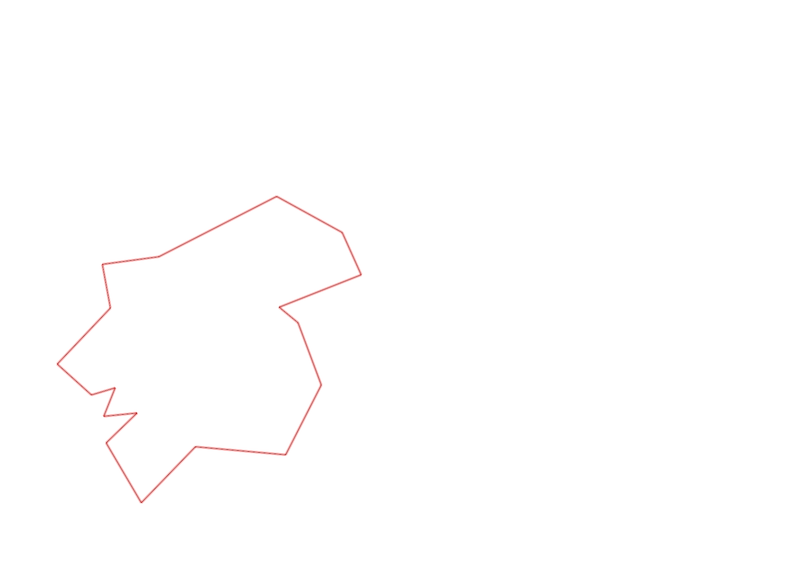
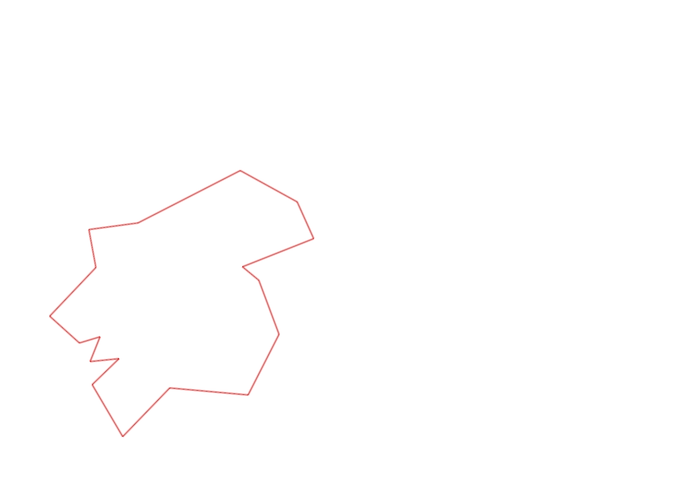

| Control |
Points |
Time Punched |
Distance |
Your Time |
Pace |
Place |
Fastest Time |
Median Time |
% Behind Fastest |
| 127 |
20 |
|
0.06 |
0:00:38 |
10:33 |
18 / 30 |
0:00:01 |
0:00:32 |
3700% |
| 42 |
40 |
|
0.17 |
0:02:14 |
13:08 |
16 / 20 |
0:01:06 |
0:01:52 |
103% |
| 61 |
60 |
|
0.21 |
0:05:21 |
25:28 |
19 / 20 |
0:02:20 |
0:03:34 |
129% |
| 59 |
50 |
|
0.24 |
0:03:39 |
15:12 |
17 / 19 |
0:01:47 |
0:02:30 |
104% |
| 77 |
70 |
|
0.21 |
0:03:08 |
14:55 |
14 / 17 |
0:01:25 |
0:02:33 |
121% |
| 40 |
40 |
|
0.18 |
0:02:35 |
14:21 |
6 / 18 |
0:01:16 |
0:02:38 |
103% |
| 41 |
40 |
|
0.11 |
0:01:01 |
09:14 |
10 / 20 |
0:00:28 |
0:01:07 |
117% |
| 71 |
70 |
|
0.09 |
0:01:39 |
18:20 |
9 / 12 |
0:00:33 |
0:01:12 |
200% |
| 54 |
50 |
|
0.08 |
0:00:45 |
09:22 |
17 / 33 |
0:00:27 |
0:00:45 |
66% |
| 69 |
60 |
|
0.07 |
0:01:53 |
26:54 |
9 / 20 |
0:01:00 |
0:01:56 |
88% |
| 53 |
50 |
|
0.12 |
0:02:14 |
18:36 |
23 / 26 |
0:01:16 |
0:01:51 |
76% |
| 44 |
40 |
|
0.2 |
0:01:53 |
09:25 |
15 / 22 |
0:00:39 |
0:01:40 |
189% |
| 32 |
30 |
|
0.12 |
0:01:24 |
11:40 |
15 / 22 |
0:00:43 |
0:01:19 |
95% |
| 63 |
60 |
|
0.15 |
0:02:06 |
14:00 |
22 / 25 |
0:01:05 |
0:01:29 |
93% |
| 107 |
100 |
|
0.35 |
0:05:15 |
15:00 |
19 / 22 |
0:02:14 |
0:03:49 |
135% |
| 57 |
50 |
|
0.2 |
0:04:23 |
21:55 |
14 / 22 |
0:01:54 |
0:03:53 |
130% |
| 92 |
90 |
|
0.12 |
0:05:27 |
45:25 |
13 / 18 |
0:02:10 |
0:04:22 |
151% |
| Finish |
0 |
|
0.23 |
0:09:39 |
41:57 |
6 / 6 |
0:01:41 |
0:05:45 |
473% |
Total Distance Covered: 2.91km
Points Scored: 920
Late Penalty: 0
Final Score: 920
Total Time: 0hours 55minutes 14seconds
Efficiency: 316.15 points/km
 
